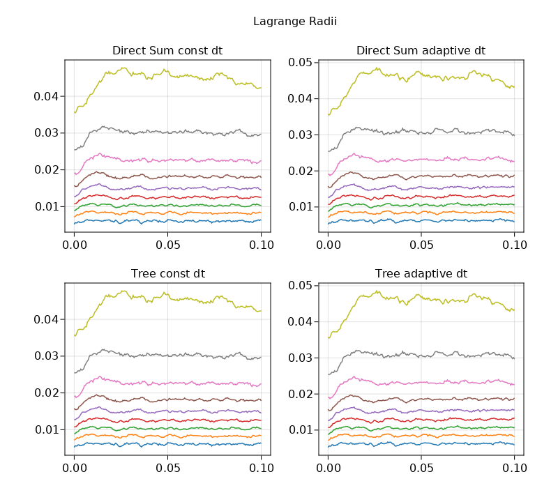
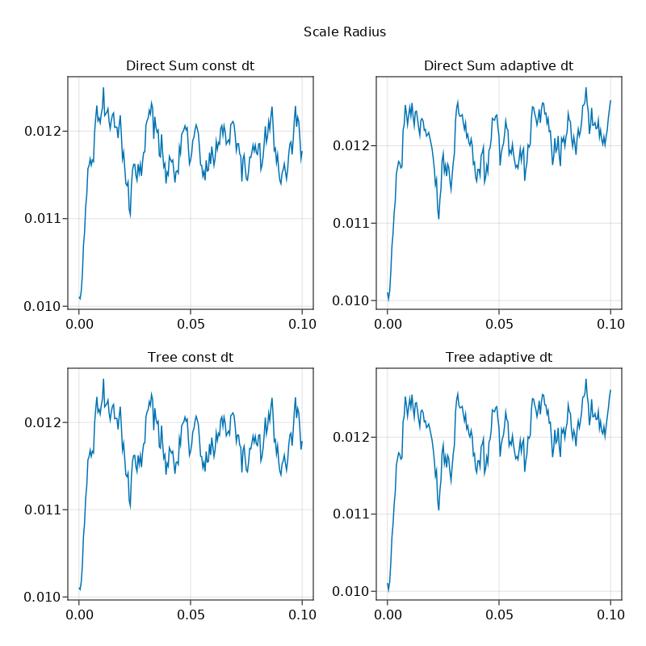

05 Plummer Star Cluster
In this example, we demonstrate how to:
- Simulate using DS gravity solver and Tree solver, both with adaptive and constant time-step
- Generate a Plummer star cluster using
AstroIC - Plot Lagrangian radii and scale radius
using AstroNbodySim, PhysicalParticles, Unitful, UnitfulAstro
astro()
mkpathIfNotExist("output")
# AstroIC supports initial condition sampling
using AstroIC
using PhysicalTrees
## First define a config. Keywords are necessary since the config type is immutable
config = PlummerStarCluster(
collection = STAR,
NumSamples = 1000,
VirialRadius = 0.010u"kpc",
TotalMass = 1.0e5u"Msun",
model = AstroIC.Newton(),
)
## Now generate particles. MaxRadius restricts the sampling region.
particles = generate(config, MaxRadius = 0.1u"kpc");
TimeEnd = 0.1u"Gyr"
TimeStep = 0.000004u"Gyr"
TimeBetweenSnapshots = 0.0005u"Gyr"
@info "Testing multi-threading mode"
ds = Simulation(
deepcopy(particles);
TimeEnd,
TimeBetweenSnapshots,
TimeStep,
OutputDir = "output/Plummer-DirectSum",
);
ds_adapt = Simulation(
deepcopy(particles);
TimeEnd,
TimeBetweenSnapshots,
TimeStep = 0.0u"Gyr",
OutputDir = "output/Plummer-DirectSumAdaptive",
);
ts = Simulation(
deepcopy(particles);
TimeEnd,
TimeBetweenSnapshots,
TimeStep,
GravitySolver = Tree(),
OutputDir = "output/Plummer-Tree",
);
ts_adapt = Simulation(
deepcopy(particles);
TimeEnd,
TimeBetweenSnapshots,
TimeStep = 0.0u"Gyr",
GravitySolver = Tree(),
OutputDir = "output/Plummer-TreeAdaptive",
);
suggest_softlen!(ds)
suggest_softlen!(ds_adapt)
suggest_softlen!(ts)
suggest_softlen!(ts_adapt)
run(ds)
run(ds_adapt)
run(ts)
run(ts_adapt)
# Plots
using AstroIO
@info "Loading AstroPlot"
using AstroPlot
using AstroPlot.ColorSchemes
using Colors
using GLMakie
using Printf
using FFMPEG
function plotfigs(ds, ds_adapt, ts, ts_adapt)
@info "Plotting radii"
FigScale = Figure(resolution = (800, 800))
FigLagrange = Figure(resolution = (800, 700))
colors = ColorSchemes.tab10.colors
AS1 = GLMakie.Axis(FigScale[1,1], title = "Direct Sum const dt")
AS2 = GLMakie.Axis(FigScale[1,2], title = "Direct Sum adaptive dt")
AS3 = GLMakie.Axis(FigScale[2,1], title = "Tree const dt")
AS4 = GLMakie.Axis(FigScale[2,2], title = "Tree adaptive dt")
AL1 = GLMakie.Axis(FigLagrange[1,1], title = "Direct Sum const dt")
AL2 = GLMakie.Axis(FigLagrange[1,2], title = "Direct Sum adaptive dt")
AL3 = GLMakie.Axis(FigLagrange[2,1], title = "Tree const dt")
AL4 = GLMakie.Axis(FigLagrange[2,2], title = "Tree adaptive dt")
plot_radii!(AS1, FigLagrange, AL1, ds.config.output.dir, "snapshot_", collect(0:200), ".gadget2", gadget2(); colors, times = collect(0.0:0.0005:0.1) * u"Gyr", legend=false)
mv("radii.csv", "output/Plummer-DirectSum-radii.csv", force = true)
plot_radii!(AS2, FigLagrange, AL2, ds_adapt.config.output.dir, "snapshot_", collect(0:200), ".gadget2", gadget2(); colors, times = collect(0.0:0.0005:0.1) * u"Gyr", legend=false)
mv("radii.csv", "output/Plummer-DirectSumAdaptive-radii.csv", force = true)
plot_radii!(AS3, FigLagrange, AL3, ts.config.output.dir, "snapshot_", collect(0:200), ".gadget2", gadget2(); colors, times = collect(0.0:0.0005:0.1) * u"Gyr", legend=false)
mv("radii.csv", "output/Plummer-Tree-radii.csv", force = true)
plot_radii!(AS4, FigLagrange, AL4, ts_adapt.config.output.dir, "snapshot_", collect(0:200), ".gadget2", gadget2(); colors, times = collect(0.0:0.0005:0.1) * u"Gyr", legend=false)
mv("radii.csv", "output/Plummer-TreeAdaptive-radii.csv", force = true)
colsize!(FigLagrange.layout, 1, Relative(0.47))
colsize!(FigLagrange.layout, 2, Relative(0.47))
rowsize!(FigLagrange.layout, 1, Relative(0.5))
rowsize!(FigLagrange.layout, 2, Relative(0.5))
supertitle = Label(FigScale[0,:], "Scale Radius")
Makie.save("output/Plummer-ScaleRadius.png", FigScale)
supertitle = Label(FigLagrange[0,:], "Lagrange Radii")
Makie.save("output/Plummer-LagrangianRadii.png", FigLagrange)
end
plotfigs(ds, ds_adapt, ts, ts_adapt)
